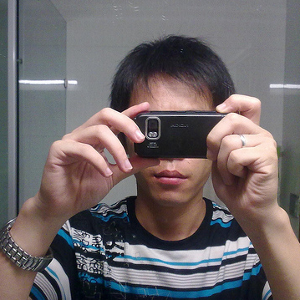

|
 |
ID : Riku Bio: SA (System Administrator)，设计控 ，关注新网络、Web2.0及移动应用，Opensource 爱好者，居家男，膝下有子。使用的设计工具: Adobe Photoshop / Adobe Illustrator / GIMP / Inkscape / Vim / 其它 使用的系统： Ubuntu / ArchLinux / FreeBSD / Windows 自述： 我承认，作为一名 SA ，设计确实是我的特殊爱好。这也由我的性格的多面性造成，SA 的工作一般隐藏于幕后，而设计却能给我带来在前台展示另一面的成就感，能把美丽的、令人印像深刻的视觉效果展示出来，这也是我的一种追求之一。 胜任的设计项目包括（不限于）： 名片，Logo , Web 及软件 UI ，创意卡片，T-shirt 等等平面设计项目。 其它：网站架设及维护 联系方式： 另外， 你可以从这里开始了解我： Blog / Flickr / Twitter / 新浪微博 / DeviantART / Wow!Ubuntu / Google Buzz / FaceBook |